| STRUCTURES DYNAMIQUES |
I-
TEMPS ET ESPACE D'UN PROGRAMME
II- STRUCTURES DE DONNEES
1-LES TABLEAUX
2- LISTE CHAINEE
3- STRUCTURE D'ARBRE BINAIRE (On se limite au cas des ABR)
III- POUR ALLER UN PEU PLUS LOIN
1- LES AVL
2- LES n-ARBRES
3- 2 EXEMPLES D'APPLICATION

L'ensemble des procédures sont en PASCAL. S'il y a suffisament de demande une version en C/C++ sera disponible.
Sources Pascal disponible: abr.pas file.pas pile.pas

Lorsque les premiers ordinateurs apparurent, ceux-ci ne possédez que très peu de mémoire et chaque octet étaient précieux. Ainsi, les informaticiens ont créé des structures de données permettant d'utiliser le moins de place possible. Par ailleurs, ces structures de données avaient l'avantage supplémentaire d'être ultrarapide.
A l'heure où les données se comptent en Tera-octet et où les fréquences d'horloge frisent le Giga-Hertz, il est normal de remettre en cause de tel structure de données. Il ne faut pas se le cacher, le traitement de l'information a lui aussi augmenté proportionnellement à la taille des disques durs. Le problème est maintenant devenu: Comment gérer de telles informations ? Ceci ne réduisant absolument pas l'importance de ces structures de données.
Pour bien comprendre l'importance de structure de liste chaînée et Arbre binaire, nous allons commencer par évoquer/rappeler la notion d'espace et de temps dans un programme.
I- TEMPS ET ESPACE D'UN PROGRAMME
Si un jour vous voulez programmer quelque chose d'un peu sérieux, vous serez amené à négocier certains paramètres intrinsèques d'un programme. Dans ces grandes lignes, un programme peut être caractériser par 4 points: Le temps, L'espace, La portabilité et L'évolution.
Le temps est souvent le paramètre le plus important d'un programme. Il détermine si le programme fait son travail en un temps raisonnable. Par exemple, un traitement de texte, prenant 1 sec à afficher un caractère frappé, n'a pas un temps raisonnable. Par contre, un programme décryptant un ficher de password Unix de 100 user en 1 heure sera considéré comme un programme plus que raisonnable. Voir peut-être trop raisonnable car il a du certainement sacrifier d'autres critères…
L'espace, on désigne par ce terme la place que nécessite un programme. Pour reprendre les exemples précédents, on peut dire que le traitement de texte prenant 1sec pour afficher une touche mais ne nécessitant que quelques centaines d'octets pour fonctionner sera (contrairement à ce que l'on pouvait d'abord imaginer) un très bon traitement de texte. Par contre, notre programme de décryptage, utilisant 1 Tera-Octet de texte pour effectuer une attaque en 1 heure, sera tout simplement inexploitable car trop gourmand en mémoire.
La portabilité est la faculté qu'à un programme à s'adapter à une situation : changement de système d'exploitation, erreur non-géré… Tandis que l'évolution sera considérée comme la facilité à mettre à jour le programme. Mais nous ne nous intéressons pas à ces aspects pour la suite.
Ainsi, nos deux programmes ont semblé dans un premier temps obsolète pour l'un (le traitement de texte) et extraordinaire pour l'autre (programme de décryptage). Or, ces programmes seront tout à fait adapter pour d'abord une machine ne disposant que de quelques kilo-octets de mémoire et ensuite une machine possédant une RAM de 1 Tera-Octet. On a touchait là le point essentiel du choix d'une structure de données: Evaluez la structure en fonction de vos besoins.
Nous allons voir ici la structure de liste chaînée permettant de perdre en vitesse et gagné en mémoire. Puis, la structure d'Arbre Binaire gagnant, elle, sur les 2 critères. Toutefois, par soucis de clarté, nous allons faire un rappel sur la structure de tableau.
II- STRUCTURES DE DONNEES
1-LES TABLEAUX
Le tableau (array) est la première donnée comme vous avez du connaître. Intuitive et simple, elle est présente dans tous les langages de programmations évolués. Elle fait parti des structures dites statiques car fixé une fois pour tout lors de l'exécution d'un programme. Sa déclaration précise toujours la taille du tableau. Celle-ci doit être de type constant, quel que soit le langage utilisé.
En C: int tab[100];
En Pascal: tab : array[1..100] of integer;
Ces déclarations précisent la création d'un tableau de 100 entiers: l'allocation mémoire de 100 fois la taille d'un integer.
AVANTAGE DU TYPE TABLEAU
Le type tableau donne un accès immédiat à l'élément désigner: il représente physiquement une adresse. Par ailleurs, le tableau est assez simple d'utilisation. Les procédures d'écriture, de lecture du tableau tiennent souvent en une seule ligne de code. Le tableau permet d'avoir un code source précis et clair. Ce point est fondamental pour quiconque ne désirant pas un programme ultra performant, lisible et facilement modifiable. Par ailleurs, un avantage qui paraîtra après comme un défaut: la taille du tableau est fixée. Le programmeur sait donc exactement quelle taille il occupe et les limites inférieures et supérieures pour y accéder.
INCONVENIENT
Comme nous l'avons évoqué précédemment, la structure Tableau fait parti des structures dites statiques qui comme toutes les structures statiques ont le défaut d'avoir une taille fixe durant toute l'exécution du programme. C'est-à-dire qu'elle n'évolue pas en fonction de la demande du programme. Prenons l'exemple d'un programme gérant le stockage d'une succession de login/password. On va d'abord créer un tableau T de taille 100 par exemple. Votre programme fonctionnera correctement tant que votre nombre de login/password n'excédera pas 100 entrés. Mais si vous n'avez pas géré une procédure de contrôle, votre programme aura un comportement plus que particulier en cas de débordement (un appel au-delà de la valeur limite du tableau):
VAR T:array [ 1..100 ] of LoginPass;
Struct LoginPass T [100];
Une technique usuellement utilisée par le programmeur amateur consiste à attribuer à la taille de T une valeur très importante: 10000 par exemple. Bien entendu, si une telle méthode vous protège d'une erreur de débordement du tableau, elle consomme une quantité de mémoire excessive avec tous les défauts que cela impose à l'utilisateur.
2- LISTE CHAINEE
PREMIERE APPROCHE
La structure de Liste Chaînée arrive pour venir combler le défaut du type Tableau. La liste Chaînée fait parti des structures dites dynamiques, c'est-à-dire évoluant au fils du programme, en fonction de son utilisation. Pour donner une première approche du type liste chaîné, on la compare souvent à un train auquel est attaché des wagon (cette approche en apparence simpliste se révèle d'une aide précieuse pour la suite :).
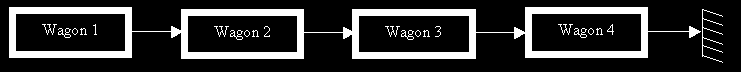
Chaque wagon est relier à 2 autres wagons: en étant dans le wagon 2, on peut uniquement aller dans le wagon 3. Par contre, si je suis au wagon 1 et veux aller au wagon 4, je devrais obligatoirement passer par le wagon 2 et 3. Traduisons informatiquement le raisonnement précédent: les wagons sont remplacer par des records et les flèches par des pointeurs.
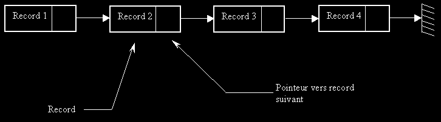
Le dernier pointeur (celui de Record 4) pointe vers….rien ! Le rien en informatique désigne une adresse spécifique: NULL ou NIL.
On voit donc apparaître la structure Liste Chaînées. Ainsi, en reprenant notre exemple précédent pour le stockage de Login/Password, à chaque nouveau login on rajoutera un wagon en tête en prenant garde de bien faire pointer le nouveau pointeur vers Record 1.
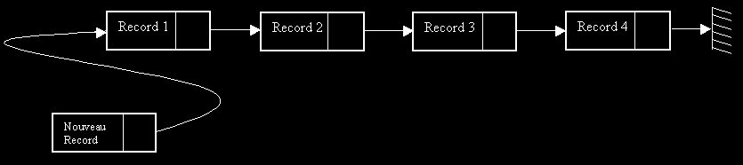
On créé la liste au fur et à mesure du déroulemant du programme. On se rend bien compte ici que le concept est totalement différent du tableau. Notre programme gére le mieux possible l'espace mémoire disponible: il n'alloue une plage mémoire que si c'est vraiment nécessaire.
IMPLEMANTATION DE LA STRUCTURE DE LISTE CHAINEE
On définie en PASCAL:
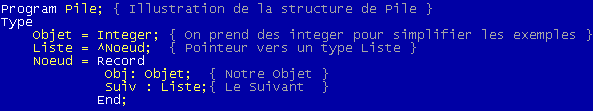
La définition donnée ici est suffisamment générale pour que vous puissiez les adapter quel que soit la situation. Etudions maintenant quelques procédure élémentaire pour manipuler correctement la structure de liste chaînée.
PROCEDURE CREER
Une fois votre type mis en place, il faut placer votre premier élément. Cette procédure va recevoir en argument notre premier objet et pointera vers l'objet suivant NIL.
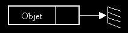
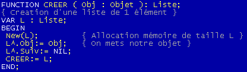
PROCEDURE TETE ET SUIVANT
Ces deux procédures, très simples, renvoient respectivement la liste suivant et l'objet courant de la liste (l'objet en tête):

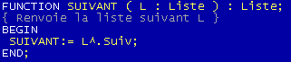
PROCEDURE EST_VIDE
Cette procédure nous servira pour la suite, elle teste si une liste est vide, c'est-à-dire si elle pointe vers NIL.

PROCEDURE AJOUTE
Il existe 2 façons d'ajouter un élément dans une liste chaîné: soit en tête, soit en queue. Nous verrons plus loin les répercutions sur le code de l'un ou l'autre. On va opter ici pour le modèle plus simple dit de Pile. C'est à dire que l'on va ajouter en tête de la liste:
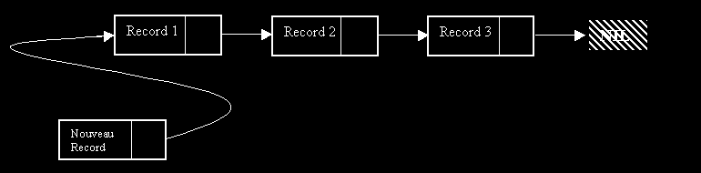
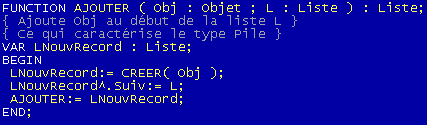
La fonction Ajouter ajoute, à la liste L, le record LNouvRecord composé du champ Obj.
On peut construire une fonction Ajouter un peu plus évoluer, qui ajoute à la kieme position de la liste L. On fera en sorte que si k est supérieur à la taille de la liste, l'objet sera ajouté à la fin de la liste. On en déduit la procédure AjouterK:
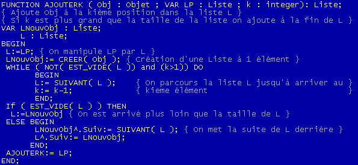
Attention, la procédure AjouteK ne s'utilise qu'exceptionnellement ! En effet, en parcourant une liste de cette manière, on prend un temps de parcours proportionnel à k.
Dans un tableau T, on accède immédiatement à l'élément tandis qu'ici on prend un certain temps pour y accéder. C'est exactement ce dont on parlait dans l'introduction: on gagne en espace mémoire (on crée un record que lorsque nous en avons besoin) par contre on perd en temps pour accéder à un élément. Toutefois, du fait de la forme particulière du type liste chaînée, on utilise très peu un accès au kieme élément car souvent on n'en a tout simplement pas besoin. Nous verrons des exemples plus tard de programme utilisant les listes: on crée souvent une relation d'ordre sur les éléments pour trier les éléments.
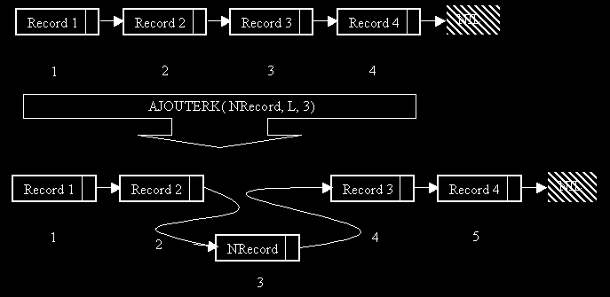
PROCEDURE SUPPRIMER
On procède un peu comme AjouterK dans le parcours de la liste, sauf qu'au lieu d'ajouter un élément, on saute le kieme.
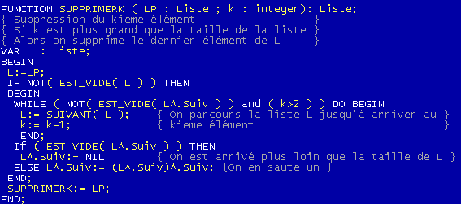
Là encore on utilisera avec précaution une tel procédure car elle prend un temps proportionnel à la taille de k pour supprimer un élément.
PROCEDURE D'INSERTION DANS UNE LISTE TRIEE
Comme évoqué précédemment, on manipule souvent des listes triées: ceci permet d'accélérer le traitement de la liste. On va supposer ici que la liste est une liste d'entier (integer), la relation utilisé sera la relation naturelle d'inégalité sur les entiers. On triera la liste dans le sens décroissant, on aura donc les 2 propriétés suivantes:
Le parcours de la liste L se fera comme pour la fonction AjouterK ou SupprimerK sauf que la condition d'arrêter ne portera pas sur k mais sur la comparaison de l'objet à insérer vis-à-vis de ses voisins. Il faut en effet maintenir la structure de liste trié, donc on insère l'objet tel qu'il soit compris entre son successeur et son prédécesseur (dans la relation d'ordre imposé sur l'objet).
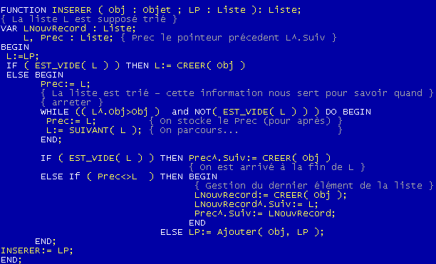
DIFFERENTS TYPE DE CONSIDERATION D'UNE LISTE CHAINEE
LE TYPE PILE
Le type pile est celui que nous avons utilisé jusqu'à présent. C'est certainement le plus intuitive et la plus utile. En effet, ceux qui on fait un peu d'asm ne manqueront pas de faire l'analogie entre la pile au sens asm et la pile ici définie. Lors d'un appel de fonction, par exemple, on empile les données dans la pile de l'ordinateur et on dépile pour les récupérer. Les listes chaînées que nous avons vu jusqu'à présent sont de type Pile, nous n'insisterons donc pas plus.
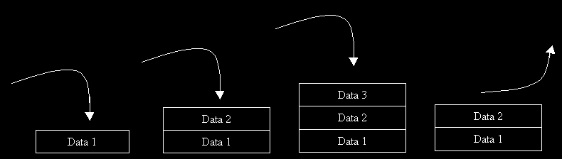
LE TYPE FILE
Ce type est très proche de la structure de Pile. En fait, dans une file le premier entré est le premier sorti contrairement à une pile où le premier entrer est le dernier sorti (le premier se trouve en bas de la pile).
La structure de File est une liste chaînée où on retire les éléments en début de liste mais on ajoute en fin de liste.
Pour implémenter une telle structure on va devoir créer 2 pointeurs: le premier pointera vers le dernier élément entrée, le second vers le premier élément sortant.
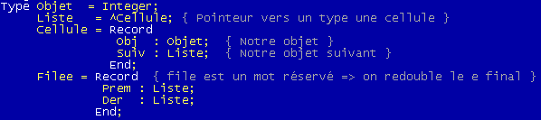
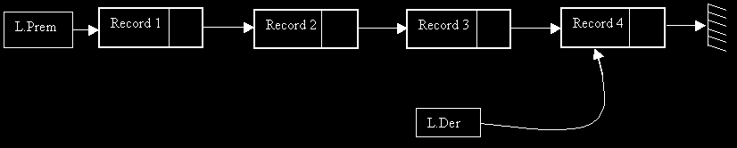
On retrouve les structures précédentes légèrement modifier:
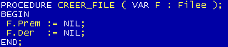
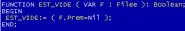
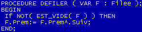
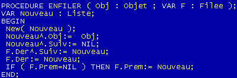
Un dessin pour expliquer la procédure ENFILER (l'équivalent de la procédure AJOUTER):
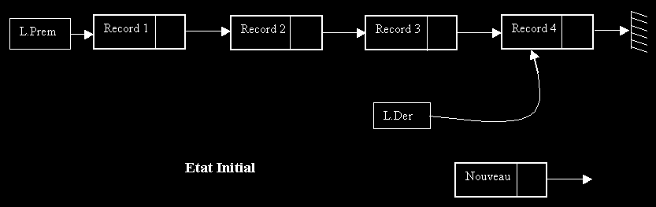
La fonction ENFILE donnera la situation suivante:
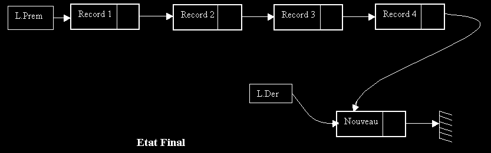
LE TYPE LISTE DOUBLE CHAINE
La liste double chaînée est la forme un peu plus évolué d'une liste chaîné classique. En effet, un nœud de la liste chaîné à un lien vers son suivant et un autre vers son précédent.
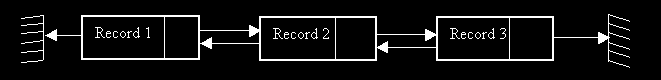
A noter ici que le numéro du record n'a plus vraiment d'importance ; ce qui compte en revanche c'est la position du pointeur. On aura une déclaration comme pour une liste chaîne sauf qu'il faudra rajouter un nouveau champs.
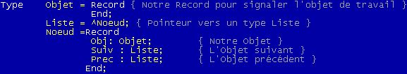
Les fonctions d'ajout et de suppression ne pose pas plus de problème. On prendra garde de mettre à jour le champ précédent et de préciser si les fonctions ajoutent ou suppriment à droite ou à gauche du pointeur courant.
LES LISTES CYCLIQUES
Une liste cyclique est une liste de type particulière ou le pointeur final ne pointe plus sur Nil mais sur le premier élément de la liste. La liste cyclique est en apparence facile à manipuler mais il fut bien faire attention lors de l'ajout de maintenir le type liste cyclique et surtout de faire attention de ne pas boucler. En effet, lors de la recherche d'un élément par exemple, on fera attention de ne pas tourner en rond si l'élément à supprimer n'apparaît pas dans la liste cyclique
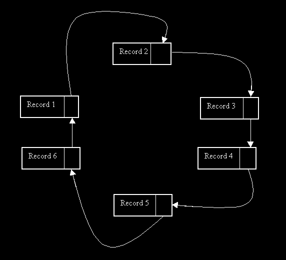
A noter que cette liste peut être également doublement chaînée.
CONCLUSION SUR LES LISTES CHAINEES
Comme vous l'avez sûrement découvert, la structure de liste chaînée est une structure nécessitant quelques procédures de base pour les manipuler (contrairement à ce qui pouvait se passer avec un tableau) ; mais au final elles se trouvent très simple à manipuler une fois ces procédures élémentaires créer. On touche là un point relativement important de cette structure. Imaginons nos procédures de base implémenté dans une unité (.tpu en PASCAL ou .h/.hpp en C/C++), imaginons ensuite que l'on donne à un autre programmeur notre unité en lui fournissant simplement les en-tête de nos procédures. Notre programmeur n'a pas besoin de savoir comment a était implémenté notre structure de données. Il stocke, supprime, accède grâce aux procédures de base sans jamais savoir comment sont représentés les données.
3- STRUCTURE D'ARBRE BINAIRE
Une liste chaînée est une structure unidirectionnelle: Pourquoi de pas la rendre bidirectionnel ? C'est exactement l'idée développée dans un arbre binaire. Un arbre binaire se présente comme un arbre généalogique retourné. On garde d'ailleurs les termes de père, fils, oncle….
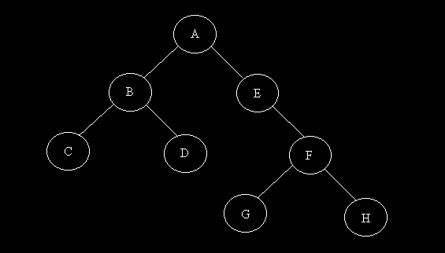
On désigne par A la racine de l'arbre. B et E sont les fils de A et sont les pères de C, D et F. Comme on le voit sur l'exemple, E ne possède qu'un fils: F est le fils gauche de E.
La théorie des Arbres Binaires est très importante et très vaste. On va se restreindre au cas des ABR (Arbre Binaire de Recherche). Les autres types d'arbre seront vu ultérieurement.
MISE EN PLACE D'UN ABR
Un ABR est un arbre servant en autre à trier des données. Il permet d'avoir un accès très rapide sur une donnée (en fait, on peut démontrer que l'ABR donne l'accès le plus rapide possible à une donnée sans hypothèse supplémentaire).
Dans un ABR, le père est inférieur ou égale que son fils droit mais plus grand strictement que son fils gauche. Cette propriété doit être répété dans TOUS sous arbre de l'arbre principal.
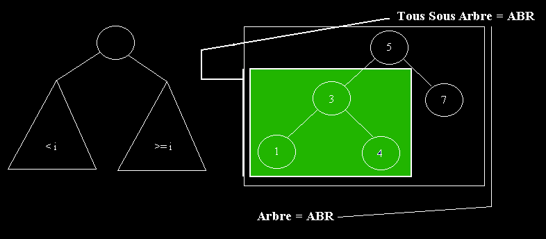
A noté qu'une fois encore, i n'est pas nécessairement un entier: il suffit de décréter une relation d'ordre entre les éléments (c'est-à-dire pouvoir les classer).
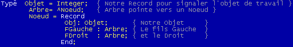
On crée les procédures de base pour manipuler les arbres binaires. Les premières procédures ne posant pas de difficultés particulières, elles peuvent se dispenser d'explications.
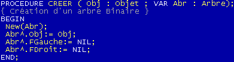
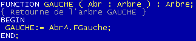
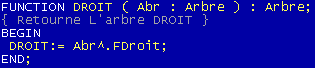
PROCEDURE DE RECHERCHE D'UN ELEMENT
Cette procédure nous informe de la présence ou non d'un élément dans l'arbre. La valeur de retour sera de type boolean.
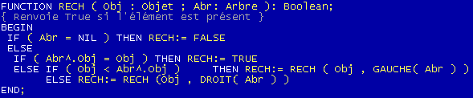
PROCEDURE INSERTION DANS UN ABR
On veut insérer un élément dans l'ABR. Il faudra donc savoir où le placer: Fils Gauche ou Fils Droit. Pour cela on utilise donc la propriété locale d'un ABR: Le père est plus petit ou égale que son fils droit et plus grand strictement que son fils gauche. L'arbre binaire se prédispose aux procédures récursives (c'est-à-dire s'appelant elles même).
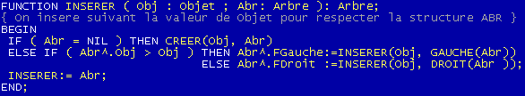
PROCEDURE SUPPRESSION DANS UN ABR
Ici les choses se compliquent un peu. Pour supprimer un élément d'un ABR, il ne suffit pas de supprimer l'élément correspondant. Il faut aussi reformer un ABR après avoir supprimer l'élément. Pour cela, il faut envisager 3 cas différents. Supposons que l'on est trouvé l'élément dans un des nœuds de l'arbre:
1er Cas: Si le Nœud ne possède pas de fils droit: On place le fils gauche à la place du nœud
2nd Cas: Si le Nœud ne possède pas de fils gauche: On place le fils droit à la place du noeud
3eme Cas: Si le Nœud possède un fils gauche et droit: On prend le plus petit élément du fils droit pour le déplacer vers le nœud à supprimer
Explication du 3eme cas:
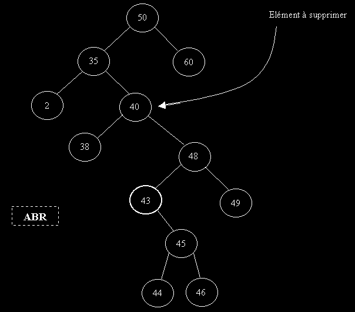
Comme évoqué plus haut, on veut reconstruire un ABR après suppression de 40. Or, comme l'arbre est un ABR, tous les éléments à droite de 40 seront plus grand. On va chercher le meilleurs candidat possible pour remplacer 40. En réfléchissant un peu, on se rend compte que le seul bon candidat est le plus petit élément des éléments du fils droit de 40. C'est-à-dire ici 43
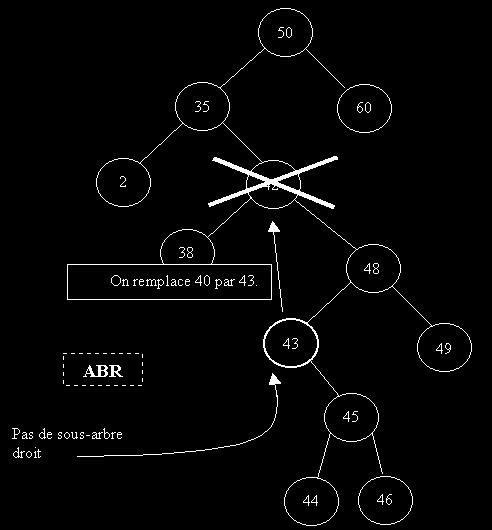
Il faut ici faire une remarque très importante. Notre plus petit élément du fils droit de l'élément à supprimer ne possède pas de fils gauche ! En effet, s'il possède un fils gauche alors étant donner que notre arbre est un ABR: on pourrait trouver un élément encore plus petit à gauche de 43 par exemple.
Comment procéder ? On va créer une fonction annexe RECHERCHE_MIN qui va effectuer 2 choses:
1/ Retourner le plus petit élément du sous arbre droit de l'élément à supprimer (renvoyer 43 dans notre exemple précédent)
2/ Supprimer ce plus petit élément et ajuster l'ABR
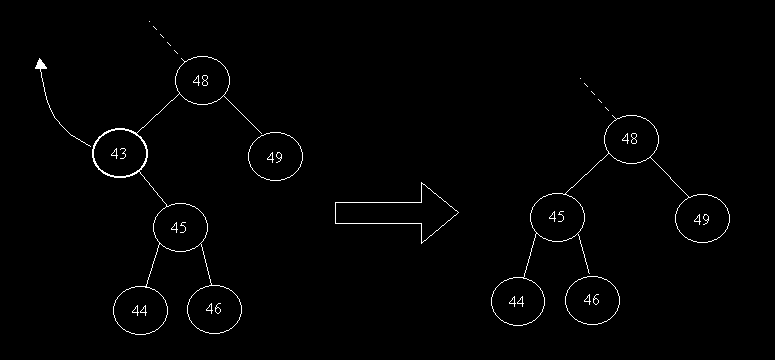
On en déduit la procédure de suppression et de recherche du minimum suivante:
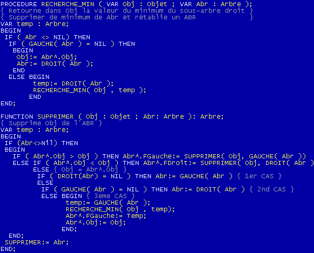
INTERET DE LA REPRESENTATION ARBRE SUR UN EXEMPLE
Pour ne pas rentrer dans des domaines trop techniques de temps de calcul d'un Algorithme (cycle), on va essayer de voir en quoi la représentation d'arbre binaire est rapide, beaucoup plus rapide que le tableau.
On va ici trier par insertion des éléments par 2 structures différentes: le tableau et l'arbre binaire. On suppose que l'on veuille insérer un élément (on prendra comme depuis le début un entier pour simplifier, mais tout objet munit d'une relation d'ordre est satisfaisant) dans la structure choisit. Cette structure est à l'origine déjà triée. En insérant cette élément on veut maintenir cette structure triée: on appelle cette algorithme le tri par insertion.
Type Tableau
Type ABR (on suppose avoir inséré les éléments dans l'ordre suivant 16, 12,29, 25, 33, 35, 6, 15, 5)
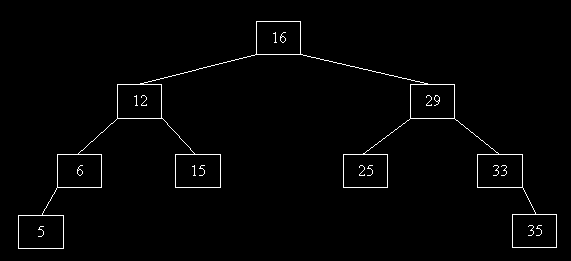
On veut maintenant insérer l'élément 7. Pour notre structure tableau, nous devrons déplacer les éléments supérieurs à 6 pour pouvoir avoir une case où mettre le 7.
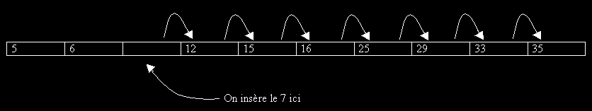
Pour notre ABR, les choses sont plus simples, il suffit en effet de descendre l'arbre pour rajouter une feuille à droite de 6:
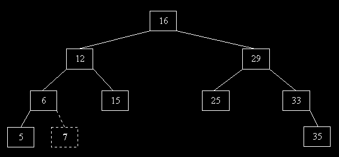
Maintenant, comptons le nombre d'opération que l'on a effectué: 7 déplacements/parcours pour le tableau et seulement 3 déplacements pour l'arbre. On a donc été deux fois plus vite (même un peu plus encore car déplacer un élément peut être lent - pensez si notre entier représenté un fichier).
Bien sûr, notre exemple a été choisi de tel manière que notre ABR ne soit pas déséquilibré. Au pire des cas, on pourrait imaginer que notre ABR soit filiforme: c'est-à-dire une liste chaînée ! Mais en général (statistiquement parlant), l'ABR reste correctement équilibré et ressemble de près ou de loin à un arbre.
Nous voyons donc que si notre d'élément était de 1000 000. Il faudrait effectuer en moyenne 500 000 déplacement pour insérer un élément (en moyenne signifie statistiquement - ici on voit facilement qu'en moyenne on insérera autant d'élément à droite qu'à gauche du milieu donc bien 500000 en moyenne) ; par contre pour notre arbre binaire, on voit que le nombre de déplacement moyen à effectué sera la hauteur moyenne de l'arbre soit LN(1000 000) = 14.
14 contre 500 000 !!! La rapidité de l'ABR est écrasante.
J'ai cru voir quelques froncement de sourcil lors de la lecture de LN. Si un arbre possède n d'éléments, en supposant qu'il soit équilibré (chaque père possède deux fils - en triangle) on aura la relation Hauteur = LN( n )
La fonction LN est présente sur toutes machines à calculé, comme la fonction cosinus.
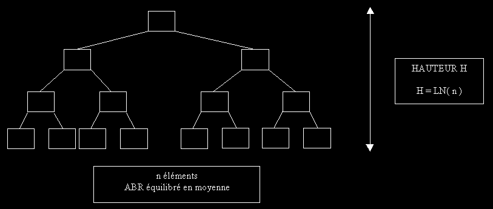
III- POUR ALLER UN PEU PLUS LOIN
Sachez qu'il existe d'autres types d'arbres. Il possède chacun des caractéristiques propres. L'ABR est le plus simple d'entre eux. Il est très satisfaisant pour classer et rechercher des éléments. Mais il existe également:
1- LES AVL
Nous avons vu que les ABR peuvent présenter des déséquilibres et ainsi perdre leur fameuse hauteur en LN(n). Le cas le plus dramatique est le cas où ces arbres deviennent filiforme, c'est-à-dire des listes chaînées. Les AVL sont des arbres plus élaborés qui maintienne cette structure d'arbre équilibré. Les procédure qui en découlent sont très complexe et feront sûrement l'objet d'un prochain texte. Ces arbres sont d'une importance capital et représentent ce qui est le plus rapide dans l'accès de données.
2- LES n-ARBRES
Ces arbres ne pointent plus vers 2 fils mais vers n fils. Généralement, on représente n fils dans un tableau ou dans une liste chaînée (plus économique en place).
Exemple de 4-Arbre
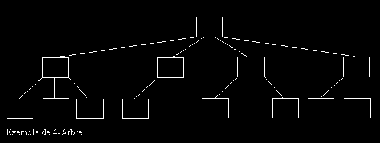
Si vous êtes plutôt Liste:
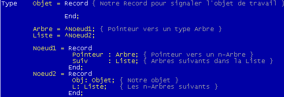
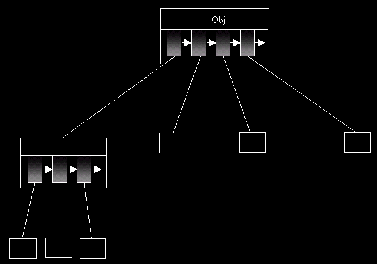
Si vous êtes plutôt tableau:
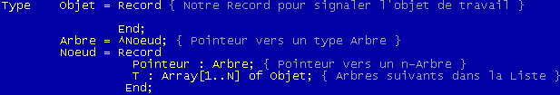
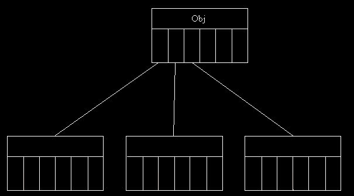
3- 2 EXEMPLES D'APPLICATION
L'objet de ce qui suit n'est pas de créer une application à proprement dit mais d'ouvrir les étapes fondamentales à la représentation informatiques des objets manipulés. Nous allons voir 2 exemples. Tout d'abord, comment représenter un réseau dans la mémoire de l'ordinateur: ce réseau pourra être parcouru et modifier. La structure utilisée doit être souple et peu gourmande en mémoire. Ensuite, nous allons étudier comment représenter de manière très compact une word list (ensemble de mots appartenant au dictionnaire permettant souvent de trouver un mot de passe).
REPRESENTER UN RESEAU
On va se limiter à des réseaux assez simple. Les réseaux plus complexe ne sont que l'extension des notions introduites ici. De manière général, un réseau est constitué de serveurs auxquels sont connectés des clients:
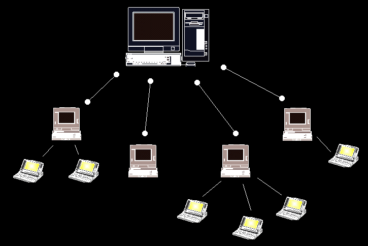
On suppose ici que les clients ne sont pas interconnectés (ce qui est faux en théorie) mais ceci ne restreint en rien le problème comme nous le verrons plus loin. On va donc définir un type serveur comme un n-arbre: on va utiliser ici le type liste chainé.
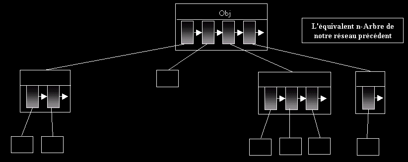
Ces réseaux (encore appelé Intranet) sont ensuite interconnectés par un réseau plus vaste: le réseau Internet par exemple.
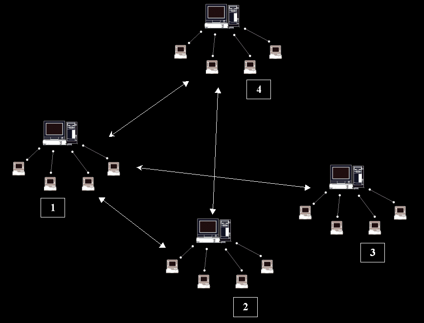
Les serveurs sont interconnectés: 1 est connecté avec (2, 3, 4) ; 2 avec (1, 4) ; 3 avec 1 ; 4 avec (1, 2). Ce genre de réseau peut se représenter de 2 manières: un n-arbre ou un tableau de liste. On va choisir ici un tableau de liste. (On parle ici plus de graphe que d'arbre - la notion de graphe est beaucoup plus générale qu'un arbre)
T sera notre tableau contenant au maximum N serveurs interconnectés: T[1] représentera le premier serveur, T[2] le second etc… T sera un tableau de liste. La liste aura 2 champs: le numéro du serveur, le type serveur.
Ce qui donne ici:
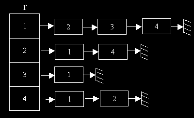
Chaque maillon de la liste chaîné possède un type champ et un numéro pour l'identifier. Il en découle la déclaration de type suivant.
Pour ajouter un ordinateur dans le réseau, il suffira de rajouter à la fin du tableau un élément en complétant la liste des ordinateurs associés.
REPRESENTER UNE WORD LIST
Une word list est usuellement représenté comme une succession de mot dans un fichier. L'attaque d'un password charge souvent une partie de ces mots en mémoire pour ensuite les passer au crible afin de casser le password. L'intérêt des arbres va consister à pouvoir charger le plus de mot possible en mémoire. Notre programme de cassage fera moins d'appel disque dur et donc gagnera plus de temps.
Soit la word liste de 10 mots: Arbore, Arbre, Reseau, Resiste, Web, Week
Cette liste est caractéristique d'une word list: mots classés alphabétiquement. Deux mots qui se succèdent (d'une même séquence) ont souvent un début similaire. Utilisons l'arbre suivant pour représenter ces mots:
On utilise un n-arbre avec le type Liste Chaîné comme second champ. Toutefois, étant donnée qu'une word liste contient souvent tous les lettres possibles, on peut raisonnablement remplacer la liste par un tableau: la perte de place ne sera pas sensible.
Au lieu de stocker tous les mots linéairement, ce qui représente 31 octets, on garde en mémoire le n-arbre qui ne compte plus que 22 octets. Au plus, votre word list est complète au moins votre arbre prendra de la place.